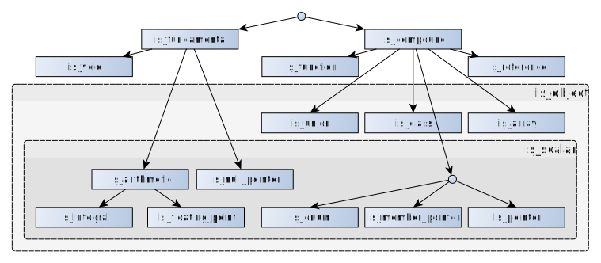

类型
对象、引用、函数（包括函数模板特化）和表达式具有称为类型 的性质，它限制了对这些实体所容许的操作，并给原本寻常的位序列提供了语义含义。
类型的分类
C++ 类型系统由以下类型组成：
- 基础类型：
- void 类型；
|
(C++11 起) |
|
(C++20 起) |
- 宽字符类型：char16_t、char32_t、(C++11 起)wchar_t；
- 有符号整数类型：
- 标准有符号整数类型：signed char、short int、int、long int、long long int(C++11 起)；
|
(C++11 起) |
- 无符号整数类型：
- 标准无符号整数类型：unsigned char、unsigned short int、unsigned int、unsigned long int、unsigned long long int(C++11 起)；
|
(C++11 起) |
- 浮点数类型：
- 标准浮点数类型：float、double、long double；
| (C++23 起) |
- 复合类型：
|
(C++11 起) |
- 指针类型：
| (C++11 起) |
- ↑ signed char 和 unsigned char 是窄字符类型，但不是字符类型。也就是说窄字符类型集合不是字符类型集合的子集。
对于除引用和函数以外的每个类型，类型系统还支持该类型的三个附加 cv 限定版本（const、volatile 及 const volatile）。

其他类别
对象类型 是除了函数类型、引用类型以及（可有 cv 限定的）void 类型以外的（可有 cv 限定的）类型。
下列类型统称为标量类型（参阅 std::is_scalar）：
| (C++11 起) |
- 这些类型的有 cv 限定版本
下列类型统称为隐式生存期类型：
- 标量类型
- 隐式生存期类类型
- 数组类型
- 这些类型的有 cv 限定版本
|
下列类型统称为可平凡复制类型：
下列类型统称为标准布局类型：
|
(C++11 起) |
| 类型特征层次结构图 |
|---|
|
 注意：SVG 图片中的元素是可以点击的，但需首先在新浏览器标签页中打开此图 |
被弃用的类别
|
下列类型统称为简旧数据类型（参阅 std::is_pod）：
|
(C++20 弃用) |
|
下列类型统称为平凡类型（参阅 std::is_trivial）：
|
(C++11 起) (C++26 弃用) |
由程序定义的类型
由程序定义的特化 是不属于 C++ 标准库且不由实现定义的显式特化或偏特化。
由程序定义的类型 是以下类型之一：
|
(C++11 起) |
- 由程序定义的特化的实例化。
类型的命名
能通过以下方式声明一个名字以指代类型：
在 C++ 程序中经常需要指代没有名字的类型；为此而设的语法被称为类型标识。指明类型 T 的类型标识的语法与省略了标识符的对 T 类型的变量或函数的声明语法完全一致，但声明语法中的声明说明符序列 被限制为类型说明符序列，另外只有在类型标识在非模板类型别名声明的右侧出现时才可以定义新类型。
int* p; // 声明一个指向 int 的指针 static_cast<int*>(p); // 类型标识是 "int*" int a[3]; // 声明一个含有 3 个 int 的数组 new int[3]; // 类型标识是 "int[3]"（称作 new-类型标识） int (*(*x[2])())[3]; // 声明一个含有 2 个函数指针的数组 // 这些函数指针指向的函数返回指向（含有 3 个 int 的数组）的指针 new (int (*(*[2])())[3]); // 类型标识是 "int (*(*[2])())[3]" void f(int); // 声明一个接收 int 并返回 void 的函数 std::function<void(int)> x = f; // 类型模板形参是类型标识 "void(int)" std::function<auto(int) -> void> y = f; // 同上 std::vector<int> v; // 声明一个含有 int 的 vector sizeof(std::vector<int>); // 类型标识为 "std::vector<int>" struct { int x; } b; // 创建一个新类型并声明该类型的一个对象 b sizeof(struct{ int x; }); // 错误：不能在 sizeof 表达式中定义新类型 using t = struct { int x; }; // 创建一个新类型并声明 t 为该类型的一个别名 sizeof(static int); // 错误：存储类说明符不是类型说明符序列的一部分 std::function<inline void(int)> f; // 错误：函数说明符也不是
声明语法的声明符 部分在移除了名字后被称为抽象声明符。
类型标识可用于下列情形：
- 指定转型表达式中的目标类型；
- 作为
sizeof、alignof、alignas、new和typeid的实参； - 在类型别名声明的右侧；
- 作为函数声明的尾随返回类型；
- 作为模板类型形参的默认实参；
- 作为模板类型形参的模板实参；
- 在动态异常说明中。
类型标识经过一些修改可用于下列情形：
| 本节未完成 原因：8.2[dcl.ambig.res]，如果能紧凑地总结 |
| 本节未完成 原因：提及并链接到 decltype 和 auto |
详述类型说明符
详述类型说明符能用来指代先前声明过的类名（类、结构体或联合体）或先前声明过的枚举名，即使该名字被非类型声明隐藏。它们也能用来声明新的类名。
详见详述类型说明符。
静态类型
对程序进行编译时分析所得到的表达式的类型被称为表达式的静态类型。程序执行时静态类型不会更改。
动态类型
如果某个泛左值表达式指代某个多态对象，那么它的最终派生对象的类型被称为它的动态类型。
// 给定 struct B { virtual ~B() {} }; // 多态类型 struct D: B {}; // 多态类型 D d; // 最终派生对象 B* ptr = &d; // (*ptr) 的静态类型是 B // (*ptr) 的动态类型是 D
对于纯右值表达式，动态类型始终与静态类型相同。
不完整类型
下列类型是不完整类型：
所有其他类型都是完整的。
下列语境都要求类型 T 完整：
- 返回类型是
T或参数类型是T的函数的定义或调用； -
T类型对象的定义; -
T类型非静态数据成员的声明； -
T类型对象或元素类型为T的数组的new表达式； - 对
T类型泛左值实施的左值到右值转换； - 到
T类型的隐式或显式转换； - 到 T* 或 T& 类型的 标准转换、
dynamic_cast或static_cast，不包括从空指针常量或从指向可有 cv 限定的 void 的指针进行的转换； - 对
T类型表达式运用的类成员访问运算符； - 对
T类型运用的typeid、sizeof或alignof运算符； - 对指向
T的指针运用的算术运算符； - 带有基类
T的类的定义； - 对
T类型的左值的赋值； - 类型是
T、T& 或 T* 的处理块。
（通常在必须知道 T 的大小和布局时要求它完整。）
如果翻译单元中出现了这些情况中的任何情况，该类型的定义就必须在相同的翻译单元中出现。否则不必出现。
不完整定义的对象类型可以变完整：
- 类类型（例如 class X）可在翻译单元中的某处视为不完整类型而在之后补充完整；类型 class X 在这两处是相同的类型：
class X; // X 的声明，尚未提供定义 extern X* xp; // xp 是指向不完整类型的指针：X 的定义不可及 void foo() { xp++; // 非良构：X 不完整 } struct X { int i; }; // X 的定义 X x; // OK：X 的定义可及 void bar() { xp = &x; // OK：类型是“指向 X 的指针” xp++; // OK：X 完整 }
- 数组对象的声明类型可以是不完整类类型的数组，它因此也不完整；如果类类型在翻译单元中的后面完整，那么该数组类型也变得完整；两处的数组类型相同。
- 数组对象的声明类型可以是未知边界数组，因此它在翻译单元的一处不完整，并在之后变完整；两处的数组类型（“含有
T的未知边界数组”与“含有 N 个T的元素数组”）不同。
到未知边界数组的指针类型或引用类型始终会指向或指代不完整类型。由 typedef 声明命名的未知边界数组始终会表示不完整类型。两种情况下该数组类型均无法补充完整：
extern int arr[]; // arr 的类型不完整 typedef int UNKA[]; // UNKA 是不完整类型 UNKA* arrp; // arrp 是指向不完整类型的指针 UNKA** arrpp; void foo() { arrp++; // 错误：UNKA 是不完整类型 arrpp++; // OK：UNKA* 的大小已知 } int arr[10]; // 现在 arr 的类型完整了 void bar() { arrp = &arr; // 错误：类型不同 arrp++; // 错误：UNKA 无法补充完整 }
缺陷报告
下列更改行为的缺陷报告追溯地应用于以前出版的 C++ 标准。
| 缺陷报告 | 应用于 | 出版时的行为 | 正确行为 |
|---|---|---|---|
| CWG 328 | C++98 | 类可以有不完整类类型的成员 | 非静态类类型数据成员需要完整 |
| CWG 977 | C++98 | 不明确枚举类型在它的定义的什么地方变得完整 | 在确定底层类型时完整 |
| CWG 1352 | C++98 | 到 T* 或 T& 类型的用户定义转换需要 T 是完整类型
|
不再需要 |
| CWG 2006 | C++98 | 有 cv 限定的 void 类型是对象类型和完整类型 | 都不属于这两种类型 |
| CWG 2448 | C++98 | 只有无 cv 限定的类型可以是整数和浮点数类型 | 也允许有 cv 限定的类型 |
| CWG 2630 | C++98 | 不明确类在自身的定义出现的翻译单元外是否会被视为完整类型 | 此时该类的定义可及的情况下视为完整类型 |
| CWG 2643 | C++98 | 指向未知边界数组的指针类型无法补充完整（但它已经是完整类型） | 被指向的数组类型无法补充完整 |
| LWG 2139 | C++98 | “由用户定义的类型”的含义不明确 | 定义并改用“由程序定义的类型” |
| LWG 3119 | C++11 | 不明确闭包类型是不是由程序定义的类型 | 使之明确 |
引用
- C++23 标准（ISO/IEC 14882:2024）：
- 6.8.2 Fundamental types [basic.fundamental]
- C++20 标准（ISO/IEC 14882:2020）：
- 6.8.2 Fundamental types [basic.fundamental]
- C++17 标准（ISO/IEC 14882:2017）：
- 6.9.1 Fundamental types [basic.fundamental]
- C++14 标准（ISO/IEC 14882:2014）：
- 3.9.1 Fundamental types [basic.fundamental]
- C++11 标准（ISO/IEC 14882:2011）：
- 3.9.1 Fundamental types [basic.fundamental]
- C++98 标准（ISO/IEC 14882:1998）：
- 3.9.1 Fundamental types [basic.fundamental]
参阅
| 类型特征 | 一种编译时查询类型属性的基于模板的接口 |
| 类型的 C 文档
| |
外部链接
| 1. | Howard Hinnant's C++0x type tree |